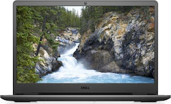
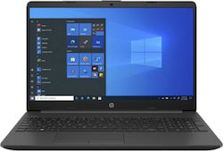

Laptops
-

Dell Vostro 3500 15.6" FHD (i3-1115G4/8GB/256GB SSD/W10 Home) (GR Keyboard)
Product Code: 1
Price:500€ Rating: 3/5
View product
- Φορητός υπολογιστής 15,6 ιντσών με στενό περιθώριο στις δύο πλευρές, μπαταρία ExpressCharge και επεξεργαστή Intel Core 11ης γενιάς.
-

HP 255 G8 15.6" FHD (Athlon-3150U/4GB/128GB SSD/W10 Pro) (US Keyboard)
Product Code: 2
Price:500 € Rating: 3/5
View product
- Ο φορητός υπολογιστής HP 255 είναι ένας οικονομικός φορητός υπολογιστής με οθόνη 15,6 ιντσών και επεξεργαστή AMD.
-

Apple MacBook Air 13.3" (2020) IPS Retina Display (M1/8GB/256GB SSD) Space Gray (GR Keyboard)
Product Code: 3
Price:1.265,00 € Rating: 3/5
View product
- Με τον επεξεργαστή M1 8 πυρήνων που αποδίδει 2,8 φορές μεγαλύτερη επεξεργαστική ισχύ και μέχρι 5 φορές καλύτερα γραφικά από την προηγούμενη γενιά.
Διαθέτει λειτουργικό macOS Big Sur ειδικά σχεδιασμένο για τον M1, οθόνη Retina, και γρήγορο και αθόρυβο πληκτρολόγιο.
-

Apple MacBook Air 13.3" (2020) IPS Retina Display (M1/8GB/256GB SSD) Gold (GR Keyboard)
Product Code: 4
Price:1.195,00 € Rating: 3/5
View product
- Με τον επεξεργαστή M1 8 πυρήνων που αποδίδει 2,8 φορές μεγαλύτερη επεξεργαστική ισχύ και μέχρι 5 φορές καλύτερα γραφικά από την προηγούμενη γενιά.
Διαθέτει λειτουργικό macOS Big Sur ειδικά σχεδιασμένο για τον M1, οθόνη Retina, και γρήγορο και αθόρυβο πληκτρολόγιο.
-

Lenovo V15 G2 ALC 15.6" FHD (Ryzen 5-5500U/8GB/256GB SSD/No OS) Black (GR Keyboard)
Product Code: 5
Price:500€ Rating: 3/5
View product
- Με επεξεργαστές έως και AMD Ryzen 5, ενσωματωμένα γραφικά Radeon και επιλογές μονάδας διπλής αποθήκευσης, αυτός ο προσιτός φορητός υπολογιστής υποστηρίζει
ομαλή εκτέλεση πολλαπλών εργασιών εφαρμογών που βασίζονται στον ιστό και βασικό λογισμικό παραγωγικότητας.
Μια ιδανική επιλογή προϋπολογισμού για χρήστες κινητών που εργάζονται από πολλές τοποθεσίες ή παίρνουν μαζί τους την εργασία στο σπίτι.